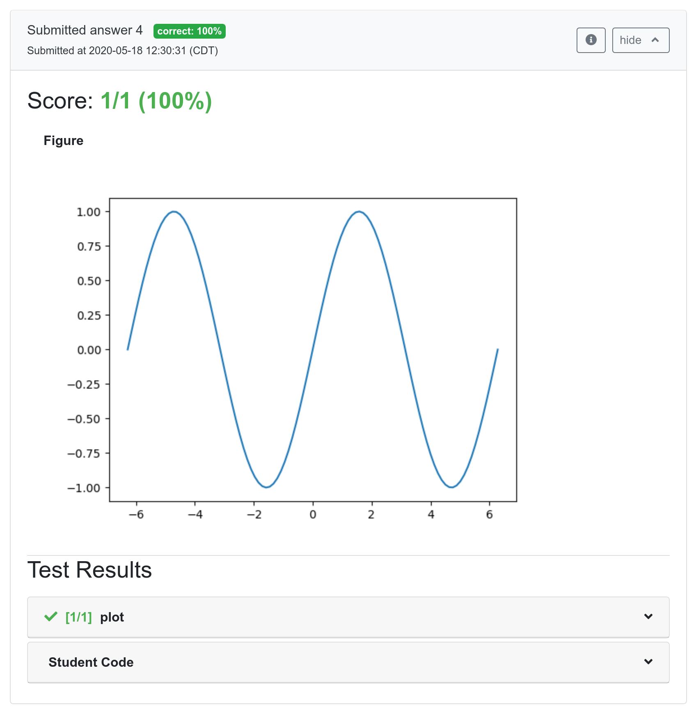

Thanks to Nicolas Nytko (CS MS '22), Nathan Bowman, and Andreas Klöckner, vast improvements have been made to the default Python autograder. Among some of the added features include the ability to autograde various datatypes like NumPy arrays, Pandas DataFrames, and Matplotlib plots:

Also included is the new pl-external-grader-variables element, which gives students a clear overview of what variables they should expect to define and have access to. This element is available for any question, not just those using the new autograder. These lists of variables can be defined in data['params']:
data["params"]["names_for_user"] = [
{"name": "n", "description": r"Dimensionality of $\mathbf{A}$ and $\mathbf{b}$.",
"type": "integer"},
{"name": "A", "description": r"Matrix $\mathbf{A}$.",
"type": r"numpy array ($n \times n$)"},
{"name": "b", "description": r"Vector $\mathbf{b}$.",
"type": r"numpy array (length $n$)"}
]
data["params"]["names_from_user"] = [
{"name": "x", "description": r"Solution to $\mathbf{Ax}=\mathbf{b}$.",
"type": r"numpy array (length $n$)"}
]
The new autograder is included by default in the grader-python docker image, to take advantage of it you can edit your question's info.json file to include:
"externalGradingOptions": {
"image": "prairielearn/grader-python",
"entrypoint": "/python_autograder/run.sh"
}
To read more about the awesome features of the new grader you can check out the documentation, or view the demoAutograder* sample questions in the example course — XC 101.